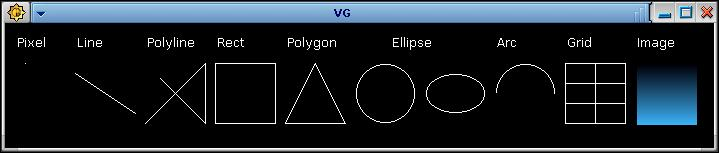

Функции рисования
Библиотека VinGraph позволяет выводить на экран следующие элементы графики:
точки, прямые и ломаные линии, прямоугольники, многоугольники, окружности,
эллипсы, дуги, а также сетки, текстовые надписи и изображения. Кроме того, из этих элементов
можно составлять новые композитные элементы (рисунки). Вот пример окна графического
терминала с перечисленными выше элементами:

Координаты точек, определяющих местоположение и размер графических элементов,
задаются положительными целыми числами. Начало координат, т.е. точка (0,0),
соответствует верхнему левому углу рабочей области окна.
Ось абсцисс направлена вправо, ось ординат -- вниз.
Заметим, что вы можете рисовать за пределами окна. При расширении окна,
например, с помощью мыши, вы увидите нарисованные там графические элементы.
Познакомимся кратко с функциями рисования.
- Pixel(int x, int y)
- Рисует точку с координатами (x, y).
- Line(int x1, int y1, int x2, int y2)
- Рисует прямую линию, соединяющую точки (x1, y1) и (x2, y2).
- Polyline(const tPoint points [], int npoints)
- Рисует ломаную линию. При вызове функции первый параметр содержит
адрес массива точек, задающих ломаную, второй параметр -- количество точек.
Каждая точка описывается структурой
tPoint, состоящей из двух
элементов: short int x и short int y,
которые содержат соответствующие координаты точки.
- Rect(int x, int y, int w, int h)
- Рисует прямоугольник. Точка (x, y) задает левую верхнюю вершину прямоугольника,
а параметры w и h -- соответственно его ширину и высоту.
- Polygon(const tPoint points [], int npoints)
- Рисует многоугольник. Смысл параметров то же, что и в функции Polyline(),
но при рисовании первая точка соединяется с последней, т.е. получается замкнутая
ломаная линия.
- Ellipse(int x, int y, int w, int h)
- Рисует эллипс. Параметры функции задают прямоугольник,
в который вписывается эллипс.
Заметим, что в библиотеке нет особой функции, рисующей окружность.
Окружность может быть нарисована как эллипс, вписанный в квадрат.
- Arc(int x, int y, int w, int h, int sangle, int eangle)
- Рисует дугу, проходящую вдоль эллипса, задаваемого первыми четырьмя
параметрами. Параметры sangle и eangle определяют соответственно
углы начала и конца дуги. Углы задаются в десятых долях градуса и измеряются
в направлении против часовой стрелки.
- Grid(int x, int y, int w, int h, int nrows, int ncols)
- Рисует сетку (пустую таблицу). Первые два параметра задают
координаты левого верхнего угла таблицы, следующие два параметра --
ширину и высоту,
а параметры nrows и ncols -- количество строк и столбцов
соответственно.
- Text(int x, int y, const char *text)
- Изображает текст, начиная с позиции (x, y).
Параметр text
передает адрес строки, завершающейся нулевым байтом.
- Image32(int x, int y, int w, int h, const int *image)
- Image24(int x, int y, int w, int h, const int *image)
- Выводит произвольное изображение (картинку).
Точки (x, y) задают
левый верхний угол картинки, а параметры w и h -- ее ширину и высоту.
Само изображение задается в виде матрицы пикселов через указатель image.
Вот фрагмент программы, с помощью которого были нарисованы представленные
выше графические элементы:
Text (10, 10, "Pixel");
Pixel (20, 40);
Text (70, 10, "Line");
Line (70, 50, 130, 90);
Text (140, 10, "Polyline");
tPoint p1 [] = { {140, 100}, {200, 40}, {200, 100}, {155, 55} };
Polyline (p1, 4);
Text (210, 10, "Rect");
Rect (210, 40, 60, 60);
Text (280, 10, "Polygon");
tPoint p2 [] = { {280, 100}, {310, 40}, {340, 100} };
Polygon (p2, 3);
Text (385, 10, "Ellipse");
Ellipse (350, 40, 60, 60);
Ellipse (420, 50, 60, 40);
Text (490, 10, "Arc");
Arc (490, 40, 60, 60, 0, 1800);
Text (560, 10, "Grid");
Grid (560, 40, 60, 60, 3, 2);
int *im_buf = (int*) malloc (60*60*4);
for (int i = 0, c = 10; i < 60; i++, c += 0x010304)
for (int j = 0; j < 60; j++) im_buf [60*i + j] = c;
Text (630, 10, "Image");
Image32 (630, 40, 60, 60, im_buf);
Не правда ли, все просто?